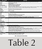

Customised content and impact in Website evaluation models: the case of international film festivals
Mónica Antolí-Calleja, Enrique Orduna-Malea and José-Antonio Ontalba-Ruipérez
Introduction
It is estimated that the number of film festivals that have been held at least once between 1998 and 2013 is around 9,700, although only around 3,000 are still running (Follows, 2013).
Given the large number of festivals, there is considerable competition to grab the attention of users (both professional and amateur) and media (Jurado Martín, 2003) by putting the best films, actors, directors, etc. on display. For this reason, the classification and ranking of film festivals according to quality is inevitable (Bosma, 2010).
At present there are several film festival directories and databases, such as Movie festivals and events worldwide, Festivals directory, World's largest film festival list, List of film festivals, Festivalfocus and Filmfestivals.com, that provide general information about the festivals but do not evaluate their quality.
The first attempt to evaluate festivals on the basis of quality was made by the International Federation of Film Producers Associations, a body that regulates international film festivals and provides accreditation which ensures access to a stable supply of movies. The Federation's evaluation model provides a set of twenty-three indicators grouped in four dimensions: descriptive statistics (thirteen indicators), market (four indicators), official sections (three indicators and six facets), and competitive sections (four indicators and six facets).
At the same time, there are prestigious international festivals, such as Toronto, Sundance or Rotterdam that, despite not having the Federation's accreditation, have varied and high quality content (Rüling and Strandgaard Pedersen, 2010). Because of this, the authority of the Federation is not universally accepted for evaluation purposes. The development of objective criteria for assessing the achievements and the quality of festivals (both from an artistic and a social and economic impact point of view) is thus a matter of interest to the film market.
In light of this, Bosma (2010) identifies different approaches to the evaluation of film festivals: a) descriptive evaluation: number of films shown, number of guests registered, etc.; b) expert evaluation: innovative programme, covering global trends, attracting potential audience, etc.; and c) survey evaluation: customer satisfaction, perceived quality of the programme according to the level of users (professional or not), previous expectations, etc.
Many of the categories included in these three approaches (especially in descriptive and expert evaluation) can be assessed from the information on the official film festival Website, which constitutes an integral part of the film festival communication channel.
Organisations should assess their Websites’ effectiveness, evaluate the return on investment (if applicable) and derive feedback on necessary improvements (Park and Gretzel, 2007). For this to be effective, Website content (which should be relevant, original and high-quality) is a key factor. In addition, content must be constantly updated. Otherwise, the organisation may lose credibility and gain a negative reputation (Chiou, Hsu and Hsieh, 2013), which could result in a loss of users and funding.
For this reason, evaluation of film festival Website content (which may indirectly reflect some characteristics of the festival such as popularity or media impact, among others) should be included as part of their general evaluation as an event.
Quality assessment of Website content is part of a broad field which tries to identify and evaluate Website success factors. A substantial volume of research studies exploring not only content quality but also Website quality issues have been performed over the last two decades covering a wide range of Internet shopping sites (Yoo and Donthu, 2001), business-to-consumer portals (Ranganathan and Ganapathy, 2002; Gounaris and Dimitriadis, 2003) or healthcare and hospital Websites (Llinás, Rodríguez-Iñesta, Mira, Lorenzo and Aibar, 2008), among many others.
These studies have been categorised in a wide variety of ways (e-quality, e-satisfaction Website evaluation, Web quality, etc.), and while their approaches are somewhat different, the underlying concepts are very similar (Park and Gretzel, 2007), leading to the emergence of similar Web quality assessment models.
These models (further explained in the research background section below), despite being global and exhaustive, lack the precision to be applied to specialised markets or environments, such as film festivals. This is due mainly to the following considerations:
Multidimensional models
The literature has moved well beyond simply examining content of Websites as a proxy for quality, to more sophisticated multidimensional approaches (Park and Gretzel, 2007), where content is just one of several parameters or factors analysed. These models are useful for an integral evaluation of Websites, although they have some shortcomings.
On the one hand, these models are mainly based on the technology acceptance model (Gounaris and Dimitriadis, 2003), paying excessive attention to information technology issues (such as personalisation, software quality or visual appearance) as opposed to purely the content offered. On the other hand, these models are generally focused on retail Websites, where financial transactions are produced, so the consideration of factors related to the interaction between the consumer and the Website (such as security, privacy, interactivity, etc.) is essential, but less important in Websites focused on content (Fassnacht and Koese, 2006).
General models
When content is one of the dimensions considered in these multidimensional models, analysis of this issue tends to be too general (valid a priori for any Website) and poorly personalised, thus in most cases it is not fully adaptable to the characteristics of Website content in specific sectors. Moreover, while general evaluation models are suitable for multisector Website comparisons, this is not the case for Websites related to the same activity, where specific content parameters (such as the absence or presence of certain content types) are possible and necessary.
Outcomes of content quality
Apart from evaluating the quality of the content itself, the quantification and evaluation of the outcomes of this content seem to be essential in determining the impact that Websites achieve on the Web. In addition, these outcomes may show indirectly the Web presence and Web visibility that content has on search engines (i.e., the degree of indexation and coverage), providing complementary information to Web design, information architecture and Web usability indicators, widely used in Website evaluation models. Despite the importance of using Web content outcome indicators, their formal application and integration within traditional Website assessment models has been limited to date.
In this regard, webometrics, as a discipline devoted to quantifying the creation and use of Web resources (Thelwall, 2004), has provided the literature with the design and testing of several quantitative Web indicators. These should be tested for inclusion in Website evaluation models, to evaluate content outcomes.
A knowledge gap has therefore been identified in quality evaluation of specific sector Websites: a) the inclusion of personalised content (categorised and adapted to specific environments); and b) the consideration of content outcomes by means of their Web presence and visibility on search engines.
This study focuses on the consideration of these two sub-dimensions of content (personalised content and content outcomes) to construct a complementary Website evaluation model (from the Web providers’ perspective) to be applied in the understudied area of film festival Websites, where suitable criteria for evaluating the quality of Web content are virtually nonexistent.
The proposed model is considered to have practical implications, as well as being a useful framework to manage targeted e-services either for film festival practitioners or Website managers.
Objectives
The main objective of this study is to design a methodology to measure international film festival Websites considering personalised content and content outcomes. To this end, the following objectives were established:
- Plan and develop a categorisation of the essential content types for international film festival Websites.
- Propose a complementary quantitative analysis model, composed mainly of formal indicators (content and basic Web services) and impact indicators (Web presence and visibility on search engines).
- Apply the above model to a sample of international film festivals.
Research background
Several models for Website evaluation have been proposed since the beginning of the twenty-first century. While some authors focused on particular aspects of a Website, such as navigation, usability or functionality (Bauer and Scharl, 2000), Web design (Zhang and von Dran, 2000) or software (Olsina, 1999), others focused on parameters concerning information technology and information systems (Liu and Arnett, 2000; Lin and Lu, 2000), user satisfaction (Alpar, 1999; Szymanski and Hise, 2000) or Website success determinants (Liu and Arnett, 2000), although some of these works have become obsolete due to the dynamic nature of the Web.
Meanwhile, other authors have proposed the integration of some different aspects of quality, constituting multidimensional models. Aladwani and Palvia (2002) developed a multidimensional scale to measure Website quality as perceived by users, which integrates the evaluation of content and design. Of equal relevance is the work of Huizingh (2000), who distinguishes content (which includes not only the information but also features and services that are offered on the Website) from design (the way the content is made available for Website visitors).
The research literature therefore results in the consideration of various dimensions which are supposed to comprise the notion of Website quality (Gounaris and Dimitriadis, 2003), although there is no consensus on the number and nature of the dimensions (Park and Gretzel, 2007).
Some authors have attempted to identify and synthesise a unified framework of commonly used Website dimensions. Park and Gretzel (2007) find a total of nine factors (information quality, ease of use, responsiveness, security/privacy, visual appearance, trust, interactivity, personalisation, and fulfilment), whereas Ladhari (2010) proposes a similar but more compact set of six dimensions (reliability/fulfilment, responsiveness, Web design, ease of use/usability, privacy/security, and information quality/benefit).
Each of these dimensions of quality is composed of different parameters, which use a variety of measuring methodologies that may be divided into three categories: qualitative (Perdue, 2002; Santos, 2003; Zeithaml et al, 2000), quantitative (Bauer, Falk and Hammerschmidt, 2006), and mixed or hybrid (Huizingh, 2000; Wolfinbarger and Gilly, 2003; Yang, Cai, Zou and Zhou, 2005).
There is a wide variety of models and developed scales designed for Website evaluation. For example: sitequal (Yoo and Donthu, 2001), webqual (Loiacono, Watson and Goodhue, 2002), 2qcv3q (Mich, Franch and Gaio, 2003), e-e-qual (Parasuraman, Zeithaml and Malhotra, 2005), etransqual (Bauer et al., 2006), perceived e-service quality (Cristobal, Flavián and Guinalíu, 2007), bracad (Jiménez and Ortiz-Repiso, 2007) or the software product quality requirements and evaluation model (Moraga, Moraga, Calero, and Caro, 2009). Special models have also been developed, such as the fuzz-Web system, which consists of a method that evaluates features of a Website by using fuzzy logic techniques (Rekik and Kallel, 2011).
Some of these models are based on the ISO 9126 standard (2001), which establishes a hierarchical model with six quality characteristics. These are subdivided into twenty-one sub-characteristics that evaluate internal quality (maintainability, portability, cost effectiveness, etc.) and twenty-seven sub-characteristics that evaluate external quality (quality in use) (Signore, 2005).
Most of the examples shown above rely on the evaluation of e-service quality, that is, the extent to which a Website facilitates efficient and effective shopping, purchasing and delivery (Ladhari, 2010). For that reason, most of the parameters covered by these models hinge on the interaction of the consumer and the Website. This fact leads some authors to explore other dimensions, for example Collier and Bienstock (2006), who propose a conceptual framework of e-service quality that combines process (interactivity), outcome quality and recovery quality; and Xu, Benbasat and Cenfetelli (2013), who test a model based on the integration of service quality, system quality and information quality.
Moreover, although there are common dimensions that may be used regardless of the type of service offered on the Website, other dimensions are specific to different e-service contexts, because traditional quality components vary depending on the industry (Ladhari, 2008).
Ladhari (2010) performs a meta-analysis of studies on e-service quality scales, finding that the dimensions of e-service quality models tend to be contingent on the industry. These studies can be divided into those that gather data across diverse industries (Gounaris and Dimitriadis, 2003; Huizingh, 2000; Ranganathan and Ganapathy, 2002; Robbins and Stylianou, 2003; Yoo and Donthu, 2001) and those focusing on specific sectors (Barnes and Vidgen, 2002; Ho and Lee, 2007; Kim and Stoel, 2004; O’Neill, Wright and Fitz, 2001; Park and Gretzel, 2007; Sohn and Tadisina, 2008).
However, the variety of Websites according to the service offered is widely diverse. Fassnacht and Koese (2006) distinguish between stand-alone services (where the electronic service constitutes the main benefit for users) and support services (where the electronic service facilitates the purchase of goods or services and online reservations). The stand-alone services can also be grouped into pure service offerings, for example online banking (Ibrahim, Joseph and Ibeh, 2006), and content offerings, for example news or sports (Carlson and O'Cass, 2010).
Content offering services (to which film festival Websites belong) are information-driven as opposed to transaction-oriented services, so the emphasis on Website quality evaluation in these cases should be placed on the presence, quality and outcome of content.
Nonetheless, the inclusion of content as a dimension in evaluation models is rare and a wide range of terminology is used to refer to it. The following terms are identified in the literature: content (Codina, 2006; Jimenez and Ortiz-Repiso, 2007), content quality (Aladwani and Palvia, 2002), information (Barnes and Vidgen, 2002; Janda, rocchia and Gwinne, 2002), information content (Ranganathan and Ganapathy, 2002), information quality (Fassnacht and Koese, 2006; Ho and Lee, 2007; Li, Thelwall, Musgrove and Wilkinson, 2002), information accuracy (Collier and Bienstock, 2006), adequacy of information (Yang et al, 2005). Other authors even combine content with other aspects within the same dimension, for example: design and content (Cai and Jun, 2003), Website content and functionality (Sohn and Tadisina, 2008) or quality of content and benefits (Ladhari, 2010).
The parameters included in these content-related dimensions are usually general-purpose (suitable to be employed in the evaluation of any Website), and focused on the quality notion, thus evaluating whether the information provided is relevant, timely, believable, easy to understand, etc., but they do not offer enough granularity to evaluate the presence or absence of specific content of relevance on a film festival Website (or any other specific market).
Another dimension that seems to be absent in the existing models is related to the outcome of contents on the Web, especially on search engines. Webometrics is an emergent discipline which, since the end of the twentieth century, has developed a large set of quantitative Web indicators. Recently, Orduña-Malea and Aguillo (2014) developed an integral taxonomy of Web indicators formed of the following categories: size (number of existing Web records or contents within a Web domain); mention (number of times a Web record or content is mentioned); usage (number of times a Web record or content is used: downloaded, read, etc.); topological (network properties of a set of Web resources); formal (quality of Web page content), and combined (a synthetic indicator formed by indicators of different categories).
All these Web indicators have been designed and applied to find Web content outcomes in research-oriented environments, which constitute closed and, to a large degree, controlled test beds. We can highlight studies applied to universities (Aguillo, Granadino, Ortega and Prieto, 2006), academic departments (Chu, He and Thelwall, 2002; Li, Thelwall, Musgrove and Wilkinson, 2003) and other university entities (Orduña-Malea, 2013), research organisations (Thelwall, Klitkou, Verbeek, Stuart and Vincent, 2010), individual researchers (Barjak, Li and Thelwall, 2007; Más-Bleda and Aguillo, 2013) or academic journals (Vaughan and Thelwall, 2003).
Webometrics has also been applied to different environments, which manage a great amount of content or are suited to high visibility, such as political parties (Romero-Frias and Vaughan, 2010), businesses (Vaughan, 2004; Vaughan and Wu, 2004), hospitals (Ramírez, Fernández, Ortega and Aguillo 2009), museums (Espadas, Calero and Piattini, 2008) and even entire countries (Baeza-Yates, Castillo and Efthimiadis, 2007).
These Web indicators are sensitive to search engine limitations and biases. Several studies have been conducted in order to gain an understanding of the accuracy of crawlers and search engines when used for metric purposes. These problems have recently been summarised by Wilkinson and Thelwall ((2013).
Despite these well-known shortcomings, the usefulness of Webometrics has been widely demonstrated if results are taken cautiously. Nevertheless, the presence of Webometric indicators in traditional Website evaluation models is currently limited because the two lines of research have followed different paths.
There is therefore a gap in the inclusion of dimensions and parameters related to content categorised according to service (especially on Websites offering content services), and content outcomes (especially those related to Web presence and visibility on search engines) when using webometrics.
The integrated bracad model (Jiménez and Ortiz-Repiso, 2007) consists of 136 indicators and twenty-one categories distributed over five dimensions (search and retrieval, authority, content, administration and design). This is the model that best fits the content outcome dimension, although it lacks sufficient customisation to cover the specificity of film festival Website content, because it is conceived as a general purpose model.
Methodology
The proposed model focuses firstly, on the dimensions of content (called formal dimensions), including the presence or absence both of content and Web functionalities, similar to the way in which Huizingh considers the content dimension (2000). The second focus is the dimension of the outcome of content (called impact), by applying Webometric measurements related to Web presence and visibility.
The model is based upon the general models of Signore (2005), Codina (2006) and especially bracad (Jiménez and Ortiz-Repiso, 2007), expanding and adapting them to the assessment of film festival Websites. These models were chosen because, as discussed above, they best meet the content sub-dimensions to be evaluated.
Proposed evaluation model
The model consists of a total of fourteen indicators, grouped into two categories: formal (40%) and impact (60%) indicators, as shown in Table 1. The formal dimension measures the presence or absence of a type of content, functionality or service, the content of which is to be evaluated, while the impact dimension measures their reach or popularity.
Although formal indicators may be the core of the model, impact indicators (outcomes) have higher weights. This is because the formal indicators depend on the creator (constituting a first step that is controlled by the owner of the Website) and the outcomes depend on the users (constituting a second step, not controlled by the Website owners, unless they use bad practices, which are, in any case, detectable). Therefore it is more difficult to achieve impact than it is to produce content and functionality. This situation is corrected in the model by giving a higher percentage to impact.
Following the idea of giving impact indicators higher weights than formal indicators, we proceeded to consider the weight of each dimension. To do this, each of the authors independently evaluated both general category weights (formal and impact) and the weights of all indicators within each category. It should be mentioned that one author is an expert in Web indicators, another is an expert in film analysis and the remaining author is an expert in building analysis models. During this process the authors took into account the fact that the formal indicators are quantitative discrete variables (presence-absence), while impact indicators are quantitative continuous variables.
Finally, the results were averaged and adjusted (inter-author differences were less than 5% in all cases). The final weight is logical, since a 70-30 balance would be excessive for the proposed model.
| Categories | Indicators | Weights |
|---|---|---|
| Formal (Ifor ) | 40% | |
| Presence of content (Pre) | 60% | |
| External link updates (Ext) | 5% | |
| Retrospective information (Ret) | 10% | |
| Multimedia resources (Mul) | 5% | |
| Communication (Com) | 5% | |
| Site map (Map) | 5% | |
| Social media service (Soc) | 5% | |
| Multilanguage service (Lan) | 5% | |
| Impact (Iimp ) | 60% | |
| Count page (Cop) | 35% | |
| Count page growth rate (Copr ) | 5% | |
| Visibility (Vis) | 35% | |
| Visibility growth rate (Visr) | 5% | |
| Authority (Aut) | 10% | |
| Number of visits (Paw) | 10∞ |
As we can observe in Table 1, all indicators can be assigned to the different types of Web indicators proposed previously by Orduña-Malea and Aguillo (2014). On the one hand, the eight indicators in the formal category correspond to the so-called formal indicators. On the other hand, the impact category includes size indicators (page count), mention indicators (visibility, authority) and usage indicators (visits), while topological indicators do not apply in this model.
Formal indicators
This category consists of eight indicators, comprising content and Web functionalities. The indicators presence of content (Pre) and retrospective information (Ret) represent the specific content about film festivals and aim to meet the first objective of this study (to plan and develop the essential content types for international film festival Websites). The remaining six indicators are traditional formal indicators that provide context to the evaluation of the Website regardless of its topic (film festivals).
The inclusion of these formal indicators in the model is due to the following considerations: a) the need for common formal indicators included in almost all previous models, since the use of atypical indicators may invalidate the model; b) the need for indicators of presence or absence, to provide coherence with film festival content indicators (Pre and Ret); and c) the need for nonspecific, generalisable indicators of film festivals that are not related to electronic commerce Websites.
A detailed description of each formal indicator is given below:
a) Presence of content (personalised content): measures the existence of a certain type of content on festival Websites (content considered essential to the dissemination of the event being promoted).  Therefore, this indicator receives the greatest weight in the formal category (60%). For the evaluation of this indicator a rating based on various types of content was proposed, consisting of six types and thirty-four subtypes, the presence or absence of which were measured independently (see Table 2).
{kind=link}
b) External link updates: detects the existence of broken links, considered a negative element in content updates. While working with hyperlinks (as Web visibility), this parameter is a quality control, so it is included in the formal indicators.
c) Retrospective information: evaluates whether information from previous iterations of the film festival may be accessed and viewed on the current Website.
d) Multimedia resources: registers the presence of multimedia resources (audiovisual or graphic). The dissemination of such material is of great importance for a film festival to attract interested users, potential visitors, and future customers and advertising.
e) Communication: evaluates the presence of a service for contacting festival staff to make suggestions, complaints, requests, etc. The absence of mechanisms to contact visitors or to manage their online suggestions denotes gaps in the treatment of clients.
f) Site map: assesses the presence of resources that help and guide users on the information the Website contains as well as facilitating access to it. Its existence improves the information architecture of the Website and so it is considered positive.
g) Social media service: rates the existence of resources (icons, links or applications) for sharing Website content on social networking sites. The provision of resources to share content can generate engagement with users and a wider dissemination of the content published on the film festival Website.
h) Multilanguage service: assesses the existence of content in languages other than the official language of the event location. This indicator is particularly important for international festivals, where the existence of visitors from different countries is expected and desirable. Although there are automatic translators, the inclusion of original multilingual content denotes a higher quality service to users.
Impact indicators
This category comprises the three main variants of content outcome indicators: size, visibility and usage. It is made up of six indicators; page count (Web presence) and Web visibility are the most highly rated (35% each) since they are the strongest and most significant Webometric indicators.
A detailed description of each impact indicator is given below:
a) Page count: measures the number of files hosted by the Web domain. This indicator shows the quantity of resources created within the Web space of each film festival and indexed in commercial search engines. Rich content files (such as PDF, Microsoft Office or HTML) indirectly reflect the creation and dissemination of prepared information aimed at users.
b) Page count growth rate: estimates the variation in size (page count) of each Website in a given period to determine its rate of increase (or decrease). This value complements the page count indicator by providing information about the Website’s dynamism with regard to content creation or deletion.
c) Web visibility: calculates the number of external inbound links to each Website at the domain level. Therefore, this indicator measures the number of hyperlinks (a kind of Web mention) that the film festival Website receives from external Websites, partially reflecting its impact on the Web.
d) Web visibility growth rate: measures the variation in visibility of each Website in a given period to determine its rate of increase (or decrease). This metric is the counterpart of page count growth rate for Web visibility.
e) Authority: measures the reliability of inbound links received according to the prestige of the Website they originate from. In this sense, this metric acts as a weighting of links, so that not all inbound links have the same value, but some are more reliable than others. The number of reliable links thus determines the value of this metric, complementing pure Web visibility.
f) Number of visits: estimates the number of unique users who visit the Website. This is a metric related to Web usage or Web audience, reflecting popularity. It complements mention indicators such as Web visibility since a Website may be linked to from several sites but does not have to be visited, and vice versa.
Scoring system
The score is based on a system of relative weights. Each indicator is assigned a weight within the category to which it belongs, and each category is assigned a weight depending on its relevance within the set of categories (Table 1), in order to obtain a final value from zero to 100, as shown below:
R = 0.4 · Ifor + 0.6 · Iimp;
Ifor = 0.60 · Pre + 0.1 · Ret + 0.05 · (Enl+Mul+Com+Map+Soc+Lan);
Iimp = 0.35 · (Cop+Vis) + 0.05 · (Copr + Visr) + 0.1 · (Aut+Paw)
Validation of the evaluation model
The sample chosen to validate the model proposed in the previous section was composed of all the film festivals from the category competitive film festivals according to the criteria of the International Federation of Film Producers Associations (2011).
Table 3 shows the fourteen festivals that meet these criteria and the official URLs of their Websites (which serve as the basis for impact metrics), the number of iterations held to date for each festival, and the date of the festival in 2013.
| Festival | Iterations | Dates (2013) |
|---|---|---|
| Berlinale - Berlin International Film Festival | 63 | 7-17 February |
| Cannes Film Festival | 66 | 15-26 May |
| Cairo International Film Festival | 36 | 26 November – 6 December |
| Goa International Film Festival of India | 44 | 20-30 November |
| Karlovy Vary International Film Festival | 48 | 28 June – 6 July |
| Locarno International Film Festival | 66 | 7-17 August |
| Mar del Plata International Film Festival | 28 | 16-24 November |
| Montreal World Film Festival | 37 | 22 August – 2 September |
| Moscow International Film Festival | 35 | 20-29 June |
| Donostia San Sebastián International Film Festival | 61 | 20-28 September |
| Shanghai International Film Festival | 16 | 15-23 June |
| Tokyo International Film Festival | 26 | 17-25 October |
| Warsaw Film Festival | 29 | 11-20 October |
| La Biennale di Venecia - Venice International Film Festival | 70 | 28 August - 7 September |
For each festival URL, all the indicators from the proposed model (Table 1) were calculated. Measurements were taken during the first half of 2013.
The procedure followed to obtain each indicator, and the exact dates they were obtained, are described below.
Calculation of formal indicators
a) Presence of content. Of the six types of proposed content, only five were used to evaluate this indicator. The forthcoming iteration of the festival (consisting of three subtypes) was not ultimately taken into account since its presence is strongly influenced by the date of the event (different for each festival). This aspect is discussed in more detail in the section below on performance of the formal indicators
Thus, for each Website the presence or absence of the thirty-one content subtypes analysed (“1” presence, “0” absence) was evaluated. Then all the scores were added up and a value obtained for each Website.
After this, the results were rescaled to a scale of zero to 100, so that the maximum possible value (thirty-one) is taken as 100, and the remaining values are calculated proportionally. This measurement was performed once (June 2013).
b) External link updates (degree of updating of hypertext content). The checking of external link updates was done through the online application brokenlinkcheck, which provides the following data: number of broken external links on a chosen Website; number of Web pages processed by the tool.
Data collection was carried out only once (June 2013). The method used to calculate the final value of the indicator for each Website was the following:
The percentage of correct external links was calculated from the number of broken links and the number of pages processed to obtain them. Additionally, an external link coverage error percentage was obtained because the free version of the tool processes a maximum number (3,000) of Web pages. This means that there may be more broken external links than those shown by the tool. Thus the percentage was calculated for the number of processed pages in relation to the amount of information on the festival Website in question.
c) Presence of services (Web functionalities). For the indicators retrospective information, multimedia resources, communication, site map, social media service and multilanguage service, the following procedure was followed. A maximum value of 100 was given to Websites that had the corresponding service or content, and 0 to those that did not. The measurement of these indicators was performed only once (June 2013).
Calculation of impact indicators
a) Page count. This parameter is calculated from Google because at present it is the search engine with the greatest coverage and allows the capture of this metric, through the site: command. Of the fourteen values obtained (one for each Website) the highest value was rescaled to a score of 100 and, from this, the relative size corresponding to each Website was calculated. Data were collected once only (June 2013).
b) Page count growth rate. Given the nature of Web data (in each sample the page count should be evaluated in light of the existing data from the previous sample), this value is extracted from the annual compound interest formula (Lewin, 1970), more suitable than the statistical approach or other descriptive indicators.
Three monthly measurements (April, May and June 2013) were performed. The values were rescaled to a scale of -100 to 100 to account for both increase and decrease in page count.
c) Web visibility. The indicator total external links is measured by open site explorer. Other possible sources for obtaining these indicators are ahrefs and majesticseo. Open site explorer was chosen because of the functionalities provided to separate page, sub-domain and root domain metrics. One single measurement was taken in June 2013. Of the fourteen values obtained (one per Website) the highest value was rescaled to a score of 100. The value of the other Websites was calculated as a percentage of the maximum value.
d) Web visibility growth rate. Measurement was performed monthly (March to June 2013). As with size growth rate, the compound interest formula was used. The values obtained were rescaled to a scale of -100 to 100 to account for both increase and decrease in visibility.
e) Authority. The open site explorer domain authority tool was used. This parameter was chosen instead of Google pagerank because it offers a scale from zero to 100 (pagerank offers a scale from zero to ten), which is more appropriate for gaining insights into differences between Websites. Measurement was carried out monthly (March to June 2013). The final value for each Website was obtained by averaging the four values obtained from the four monthly measurements.
f) Number of visits. Due to the difficulty in obtaining external and free measurements of the number of visits at present, the Alexa pageviews indicator was used as an alternative. The measurement was performed twice (May and June 2013). The final value for each Website was obtained by calculating the average of the two values. Then the maximum value (scaled to 100) was taken and the rest were calculated proportionally.
Data processing
The collected data were imported into a spreadsheet to be processed and analysed statistically. At the same time, the weights assigned to each indicator and category of the evaluation model were applied to produce both the festival ranking by category of indicator (formal and impact) and the overall ranking. The data processing was carried out during the month of September 2013.
Results
Performance of the formal indicators
Table 4 shows the scores for each type of content (presence of content parameter) as well as total values for each of the festivals analysed. The complete data by subcategory may be consulted in Appendix 1.
| Festival | About | Previous iteration | Earlier iterations | Aimed at professionals | Aimed at filmgoer | Total |
|---|---|---|---|---|---|---|
| (n=12) | (n=6) | (n=5) | (n=6) | (n=2) | (n=31) | |
| Berlin | 10 | 5 | 4 | 6 | 1 | 26 |
| Cannes | 10 | 6 | 5 | 6 | 2 | 29 |
| Cairo | 5 | 5 | 4 | 3 | 1 | 18 |
| Goa | 4 | 6 | 4 | 3 | 0 | 17 |
| Karlovy Vary | 11 | 6 | 5 | 5 | 2 | 29 |
| Locarno | 12 | 6 | 3 | 5 | 2 | 28 |
| Mar del Plata | 2 | 0 | 3 | 2 | 0 | 7 |
| Montreal | 5 | 2 | 0 | 4 | 2 | 13 |
| Moscow | 6 | 6 | 3 | 2 | 0 | 17 |
| San Sebastian | 10 | 6 | 5 | 6 | 2 | 29 |
| Shanghai | 9 | 2 | 2 | 5 | 1 | 19 |
| Tokyo | 6 | 0 | 0 | 2 | 0 | 8 |
| Warsaw | 9 | 5 | 2 | 3 | 0 | 19 |
| Venice | 8 | 4 | 1 | 5 | 0 | 18 |
| Total | 107 | 59 | 41 | 57 | 13 | 277 |
| Percentage | 63.7 | 70.2 | 58.6 | 67.9 | 46.4 | — |
As can be seen in Table 4, no Website achieved the highest possible score (31). The Websites with the most content presence are Cannes, Karlovy Vary and San Sebastian (29 points each), while those with the least content are Tokyo (8 points) and Mar del Plata (7 points).
With regard to content type, the previous iteration of the festival is the one that achieved the highest presence percentage (70.2%), with 59 points out of a possible total of 84 (six subtypes for fourteen festivals), while earlier iterations (58.6%) and aimed at filmgoers (46.4%) are those with the worst overall performance, although the latter should be considered separately, as it is only made up of two subtypes.
Only one of the subtypes (film registration, a subtype of aimed at professionals) scored on all festivals, while contact and regulations scored on thirteen of the fourteen festivals. At the other end of the spectrum are press and figures, which appear in only four festivals.
Table 5 shows the gross values obtained for the remaining formal indicators. Each parameter is commented on below.
| Festival | Pre | Ext | Red | Mul | Com | Map | Soc | Lan |
|---|---|---|---|---|---|---|---|---|
| Berlin | 83.87 | 100.00 | 100 | 100 | 100 | 100 | 100 | 100 |
| Cannes | 93.95 | 99.80 | 100 | 100 | 100 | 100 | 100 | 100 |
| Cairo | 58.06 | 99.50 | 100 | 100 | 0 | 0 | 100 | 0 |
| Goa | 54.84 | 94.30 | 100 | 100 | 100 | 100 | 0 | 0 |
| Karlovy Vary | 93.95 | 99.93 | 100 | 100 | 100 | 100 | 100 | 100 |
| Locarno | 90.32 | 99.80 | 100 | 100 | 100 | 0 | 100 | 100 |
| Mar del Plata | 22.58 | 100.00 | 100 | 100 | 100 | 0 | 0 | 100 |
| Montreal | 41.94 | 100.00 | 0 | 100 | 100 | 0 | 100 | 100 |
| Moscow | 54.84 | 99.97 | 100 | 100 | 100 | 0 | 0 | 100 |
| San Sebastian | 93.55 | 99.47 | 100 | 100 | 100 | 0 | 100 | 100 |
| Shanghai | 61.29 | 98.66 | 100 | 100 | 100 | 0 | 0 | 100 |
| Tokyo | 25.81 | 0.00 | 0 | 100 | 100 | 0 | 100 | 100 |
| Warsaw | 61.29 | 99.83 | 100 | 100 | 100 | 0 | 0 | 100 |
| Venice | 58.06 | 98.50 | 100 | 100 | 100 | 0 | 100 | 100 |
External link updates: practically all of the festival Websites had a high percentage of updated external links. Berlin, Mar del Plata and Montreal achieved the highest score for this indicator, since no broken links were found. In contrast, it is worth mentioning the Tokyo festival Website, in which all links processed were broken links, an aspect that is discussed in the Discussion, below. The number of links should be understood in the context of the number of pages processed (up to 3,000). For example, the Websites of the Mar del Plata and Montreal festivals have very few Web pages to process (1 and 3 respectively), and therefore, they logically generate a virtually nonexistent total number of broken links. Similarly, data from the processed pages should be taken in the context of the calculated size of the Website, in order to ascertain the extent and coverage error of the tool (see complementary material, Appendix 1, Annex II). For example, Cairo and Goa obtained very high coverage errors (91.28% and 110.14%), so the results should be treated with some caution.
The raw data for the detected number of broken links, the number of processed pages, and the coverage error in relation to the total size of the Website are set out in Appendix 1.
Retrospective information: all the festival Websites provide access to retrospective information except Montreal and Tokyo.
Multimedia resources: all the festival Websites make use of multimedia resources, and therefore all obtain the maximum value (100).
Communication: all the festivals offer the option to contact the festival team, except for Cairo.
Site map: only 28.57% have a site map (Berlin, Cannes, Goa and Karlovy Vary).
Social media service: 35.71% of the Websites have no content retransmission service on social networks; this is the case for Goa, Mar del Plata, Moscow, Shanghai and Warsaw.
Multilanguage service: all of the Websites, except for Cairo and Goa, present their content in various languages, which means that 85.72% of the festivals offer this service.
Performance of the impact indicators
Table 6 shows the standardised data for each impact indicator and festival. The raw data may be consulted in Appendix 1.
| Festival | Cop | Copr | Vis | Visr | Aut | Paw |
|---|---|---|---|---|---|---|
| Berlin | 1.59 | -92.19 | 100.00 | -60.69 | 83.00 | 20.27 |
| Cannes | 1.89 | -95.88 | 76.46 | 43.85 | 81.25 | 100.00 |
| Cairo | 0.00 | -94.62 | 4.34 | 100.00 | 47.50 | 0.36 |
| Goa | 0.00 | -95.15 | 0.11 | -100.00 | 30.00 | 0.18 |
| Karlovy Vary | 0.39 | 10.11 | 12.97 | 42.03 | 61.25 | 2.70 |
| Locarno | 0.11 | -93.18 | 5.61 | -66.40 | 49.00 | 1.97 |
| Mar del Plata | 0.12 | -95.51 | 8.41 | -77.72 | 56.00 | 0.33 |
| Montreal | 0.00 | -100.00 | 8.57 | -61.70 | 69.25 | 3.09 |
| Moscow | 0.17 | -95.09 | 6.20 | 51.89 | 54.25 | 1.24 |
| San Sebastian | 100.00 | 100.00 | 18.33 | 40.21 | 66.25 | 4.00 |
| Shanghai | 0.07 | 38.40 | 10.40 | 41.39 | 59.50 | 5.82 |
| Tokyo | 0.22 | 10.17 | 12.28 | -63.86 | 69.50 | 1.24 |
| Warsaw | 0.43 | 51.53 | 3.84 | 44.87 | 52.00 | 0.70 |
| Venice | 8.52 | 50.79 | 90.08 | 43.32 | 85.75 | 21.09 |
Page count: the Website of the San Sebastian festival by far outstrips the others with a page count of 5,870,000 pages, followed far behind by Venice (500,000). Others that stand out are Cannes (110,000) and Berlin (93,400), while Montreal (58), Goa (207) and Cairo (218) are notable for their small page count.
Page count growth rate: 57.14% of the Websites have a negative page count growth rate. The Websites with the most negative growth rates are Montreal (-2.23%) and Cannes (-1.27%). Those with a positive growth rate are, most notably, San Sebastian (25.84%) followed by Warsaw (12.23%) and Venice (12.03%).
Web visibility: regarding the number of external links received, Berlin ranks highest (145,581 links), followed by Venice (131,143) and Cannes (111,307). Last position is occupied by Goa, which only received 164 external links. The performance of Montreal should also be noted, as its Web visibility is relatively high (12,471 links) despite the small size of its Website (58 pages).
Web visibility growth rate: in this category, 6 of the 14 Websites (42.8%) have a negative growth rate; Goa (-1.52%) and Mar del Plata (-0.67%) obtained the lowest values. Conversely, the Cairo Website is the one that achieved the highest rate of growth during the months studied (2.31%), followed by Moscow (0.47%).
Authority: the best-positioned domain is Venice (85.75), followed by Berlin (83) and Cannes (81.25). The Web domains with the least authority are Goa (30) and Cairo (46.5).
Number of visits (page views): the Website with the highest index of page views is Cannes (1.65 · 10-4), followed far behind by Venice (3.48 · 10-5) and Berlin (3.35 · 10-5), while the lowest value was obtained by Goa (3 · 10-7).Ranking of international film festival Websites
Finally, Table 7 shows the ranked list of international film festival Websites after applying formulas Ifor and Iimp to obtain the final value R. The weighted data for each indicator are in Appendix 1, Annex IV (formal indicators) and Annex V (impact indicators).
| Rank | Festival | Formal | Impact | Total |
|---|---|---|---|---|
| 40% | 60% | |||
| 1 | Donostia San Sebastián International Film Festival | 36.44 | 33.27 | 69.71 |
| 2 | Cannes Film Festival | 38.45 | 25.77 | 64.21 |
| 3 | Berlinale - Berlin International Film Festival | 36.13 | 22.94 | 59.07 |
| 4 | La Biennale di Venecia - Venice International Film Festival | 27.91 | 29.94 | 57.85 |
| 5 | Karlovy Vary International Film Festival | 38.45 | 8.21 | 46.66 |
| 6 | Shanghai International Film Festival | 26.68 | 8.51 | 35.19 |
| 7 | Locarno International Film Festival | 35.67 | -0.53 | 35.15 |
| 8 | Warsaw Film Festival | 26.71 | 6.95 | 33.66 |
| 9 | Moscow International Film Festival | 25.16 | 3.37 | 28.53 |
| 10 | Cairo International Film Festival | 23.93 | 3.95 | 27.87 |
| 11 | Montreal World Film Festival | 20.06 | 1.29 | 21.35 |
| 12 | Goa International Film Festival of India | 25.05 | -4.02 | 21.03 |
| 13 | Tokyo International Film Festival | 14.19 | 5.26 | 19.45 |
| 14 | Mar del Plata International Film Festival | 17.42 | -0.03 | 17.39 |
The San Sebastian film festival ranked highest with 69.71 points (out of 100), followed by Cannes (64.21). The ranking also reveals several clusters of festivals with very similar results, such as Berlin and Venice (59.07 and 57.85 respectively), Shanghai, Locarno and Warsaw (35.19, 35.15 and 33.66 respectively), Moscow and Cairo (28.53 and 27.87), and at the bottom of the table, Montreal, Goa and Tokyo (21.35, 21.03 and 19.45).
These data show a similarity in the performance of different festivals, which indicates a need to examine the list by grouping festivals with similar results, and not treating it as a qualitative list, since the appearance of various statistical artefacts may cause slight changes in the positions.
Furthermore, although the number of indicators that make up each category is different, the Websites perform significantly better in the formal indicators. Up to five festivals exceed 30 points (out of a maximum 40), while 7 festivals exceed 20. Only Mar del Plata and Tokyo do not exceed 20 points.
The impact indicators have lower values, taking into account the fact that the maximum score is 60 points. In fact, the festival with the highest score in this category is San Sebastian, with 33.27 points (only 55.45% of the maximum value), and only three more festivals (Cannes, Berlin and Venice) exceed 20 points. Moreover, 3 festivals (Locarno, Goa and Mar del Plata) obtained negative scores (due to growth rate indicators for size and visibility, the only ones that admit negative values).
Finally, a significant Pearson correlation (r=0.749, α= 0.05) was observed between the positions achieved by the festival Websites and the number of previous iterations of the festival (shown in Table 3), indicating a possible influence of the longevity of a festival on its Web performance. In addition, a slightly higher correlation was obtained in the formal indicators category (r=0.724, α= 0.05) than in the impact indicators category (r= .625, α= 0.05), which is consistent with the lower performance of the latter, as discussed previously.
Discussion
The proposed analysis model is composed of two categories (formal and impact), comprising eight and six indicators respectively. As with any other operationalisation, the inclusion, categorisation and weighting of the indicators are subject to discussion and to a continuous process of refinement and improvement. Similarly, the tools used to obtain the raw values must continually be reviewed.
Moreover, the nature of the indicators is very diverse. Some can only accept two values (presence or absence of a given content type or service), others can accept any positive integer value (size) or both positive and negative (growth rate of Website size or visibility). This has made it necessary to rescale the various values (zero to 100) for all the indicators (which may introduce some margin of error), in order to obtain a final index.
In any case, the results are comprehensive and coherent. Using a wide range of indicators per category has made it possible to address each dimension of analysis more fully. Impact indicators obtain Cronbach’s α= 0.66; this cannot be calculated for the formal indicators as there are indicators with constant values.
Furthermore, the different data samples allowed specific errors and outliers to be corrected, thereby obtaining a more accurate and precise final image of the content of the festival Websites.
Below are offered, in a structured way for a better readability, diverse points of discussion:
Selection of the sample
The sample is composed only of the film festivals in the competitive film festivals category. This category only includes international film festivals that are international federation of film producers associations members, leaving out other very significant festivals such as Sundance or Toronto. Enlargement of the sample could produce a different outcome in the performance of the indicators, a factor which should be examined in future studies. In any case, the purpose of the model is to test the complementary information provided by the dimensions of personalised content and content outcomes, and the ranking is somewhat secondary.
External link updates indicator
The results for this indicator must be viewed with some caution due to the limitations of the brokenlinkcheck tool, since they are based on statistical estimates and not on real data for total broken links. Furthermore, the processed data are occasionally inconsistent with other indicators from other sources. For the Goa festival, for example, the size indicator detected 207 references while brokenlinkcheck processed 228 (thereby obtaining an error of 110.14%).
Size growth rate indicator
The size of the Website exhibited high data variability (which logically affected the growth rate). For example, for the Cannes Website 418,000 files were retrieved in April, 455,000 in May and 111,000 in June (Appendix 1, Annex III).
Given the timing of the festival (May 15 to 26, 2013; see Table 3), it is likely that during the months leading up to it new information was added, and that this is the reason that very high values were recorded in the previous months. After the conclusion of the festival, however, very low values were detected.
This effect also occurs on the Websites of Karlovy Vary and Shanghai, but not Moscow. Furthermore, important data variations were also observed on the Montreal, San Sebastian, Warsaw and Venice Websites, although there is insufficient data in these cases to confirm the influence of the dates of the festival, as with Cannes.
Another reason that could influence the high variability of data may be a change of domain (this is the case of the Mar del Plata and Tokyo Websites). In fact we can see how very high values were recorded for Website size in the months preceding the change of domain, while in the month in which the domain was changed, the Website size was smaller.
Therefore, a method should be designed in future studies to monitor and isolate the event date effect, both for the size indicator and the others (especially in the forthcoming iteration of the festival category, which was not measured in this study precisely because the event date effect was not isolated).
Visibility growth rate indicator
A tendency for Web visibility to increase during the months preceding the festival, and decrease in the months following it was observed. Since the dates of the festivals are different, data collection may have benefitted certain festivals (Karlovy Vary, Moscow and Shanghai) and been detrimental to others (Berlin). Again, monitoring the date of event variable should be considered in order to minimise this influence on the data obtained.
Festivals with exceptional results
The Website of the San Sebastian festival came first in the quality of content ranking (69.71), slightly ahead of Cannes (64.21). This high performance is due mainly to the Website size (5,870,000 pages) and size growth rate (25.84%) indicators, for which the festival obtains values far superior to the other Websites in the study. For this reason it was deemed necessary in the future to conduct a study focused on this festival in order to gain further knowledge of the causes of the high performance for these indicators.
The Websites of the Mar del Plata (17.39) and Tokyo (19.45) festivals ranked lowest. This result again raises the question of whether the change of domain for each new iteration of the festival creates a disadvantage compared to the Websites that always use the same domain (Web indicators tend to favour more permanent URLs as they have a statistically higher probability of obtaining greater visibility than newly-created domains).
Longevity of the festival
As noted above, the correlation between the longevity of a festival and the performance of its corresponding Website is high (r=0.75). This could indicate that the most established festivals have a cumulative advantage. However, the correlation decreases if we only consider the impact indicators, which may indicate that the reach of the Website depends heavily on other aspects directly related to its design and diffusion.
Comparison with previous models
The proposed model aims to concentrate on two dimensions of content indicators (specific and generic) and the Web impact of such content, as a complement to other typical dimensions used in the evaluation of Websites. In the classical evaluation models, as shown in the research background, the indicators did not show specific content; and Web impact indicators are scarce and appear dispersed.
For this reason, this model cannot be directly compared with previous general models. However, the concentration of content indicators can be embedded, with the necessary adaptations, in other general models.
Conclusions
The main conclusions are:
- The proposed model is considered a valid tool for evaluating the quality of the content of international film festival Websites considering two dimensions usually not covered: personalised content and content outcomes; it could also contribute to the improvement of design and construction guidelines for a Website of this type.
- Only 28.57% of the analysed festivals have adequate content quality (i.e., they obtained at least 50 out of a possible 100 points). This means that the quality of their content does not correspond to that of the event they are promoting.
- Formal indicators outperform impact indicators, influenced greatly by the low rates of growth in size and visibility. The Venice Film Festival is the only Website to score higher in impact (29.94) than in formal aspects (27.91).
- The festival of San Sebastian achieved first position overall, due, in particular, to its performance in the impact indicators (33.27), well above the other festivals.
- The longevity of a film festival is an indicator that positively influences the quality of the content of its Website, especially in relation to the formal indicators.
- The content types that are most sensitive to changes in content updates are: forthcoming iteration of the festival and aimed at film professionals. All other types do not change significantly over time.
By way of a final conclusion, the performance of personalised content and content outcomes of international film festival Websites are low overall. This is especially critical because the leading international film festivals were chosen for this study.
However, these results should be expanded on in future work, in which new indicators should be considered and the study sample should be broadened. Moreover, some of the main limitations identified in the model (such as the effect of updating content, URL changes for each iteration, the number of previous iterations, etc.) should be further studied.
The intention of this study was to characterise and analyse personalised content and content outcomes in a specific sector (film festivals). These two content sub-dimensions should be added in the future to the parameters related to quality of content, and all these to the remaining dimensions related to Website quality (reliability, responsiveness, Web design, usability, security etc.) to gain a full picture of film festival Websites, which is the purpose of this study. Furthermore, the presence of content parameter (customised for different sectors) and impact indicators should be incorporated into other general-purpose models due to the useful complementary information they provide in the evaluation of Websites.
Finally, the proposed analysis model could be very helpful in determining the possible correlation between the quality of Website content and other variables, such as the annual budget of the festival, investment in culture by the festival host cities, and its economic impact on the region.
Acknowledgements
This work has been carried out in the framework of the research project with reference APOSTD/2013/002, funded by the Regional Ministry of Education, Culture and Sport (Generalitat Valenciana, Spain).
About the authors
Mónica Antolí-Calleja graduated in both Fine Arts and Documentation from the Polytechnic University of Valencia She works as an academic librarian and web content manager at the
Instituto Universitario de Matemática Pura y Aplicada (IUMPA). Polytechnic University of Valencia, Camino de Vera s/n, Valencia 46022, Spain. She can be contacted at moancal@bbaa.upv.es
Enrique Orduna-Malea holds a PhD in Documentation from the Polytechnic University of Valencia and works as a post-doctoral researcher at Trademetrics Group & EC3 Research Group. Polytechnic University of Valencia, Camino de Vera s/n, Valencia 46022, Spain. He specialises in the design and application of methods and metrics to the evaluation of the Web performance of entities belonging to specific environments, such as academic (authors, journals, universities) and business (companies, organizations). He can be reached at enorma@upv.es ORCID No. orcid.org/0000-0002-1989-8477
José-Antonio Ontalba-Ruipérez is tenured lecturer (Profesor Titular de Universidad) at the Trademetrics Group, Polytechnic University of Valencia, Camino de Vera s/n, Valencia 46022, Spain, specializing in courses on methods and techniques of social science research. His research concerns scientific communication, scientometrics, quantitative research methods, cybermetrics and social media metrics. He can be reached at joonrui@upv.es ORCID No. orcid.org/0000-0002-2071-6108